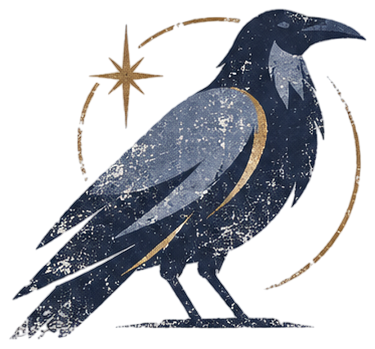
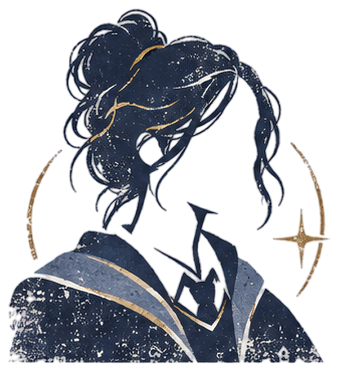
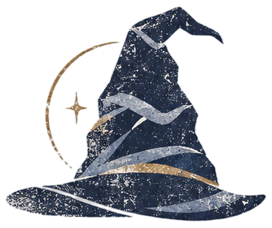

АмилияЛиссаранд
Если не можешь решить проблему, то она не твоя, а если она решаема, то это и не проблема - просто задача
Если бы я был(а) Вороном, я бы загадала загадку про...
Свободу. Например, когда человек станет по-настоящему свободным?

когда я поступала в Хогвартс, я надеялась…
Найти свой дом. Где можно учиться, развивать и узнавать многое. Становиться лучше.
мои первые три вопроса после поступления в хогвартс
Обязательно ли мне вести РПГ или можно просто тихо изучать мир?
На сколько сложно в будущем стать преподавателем?
Как научиться играть в квидич, если никогда не понимал как это?


почему Когтевран?
типичный Когтевран
Когда все факультеты моментами ругаются и тихонечко могут ненавидеть друг друга, когтевра держа нейтралитет попивает чаек в уголке наблюдая за хаусом.
мои главные таланты
Оставаться позитивной в любой ситуации
таланты, которые хочу раскрыть
Актерское мастерство, подвешаный язык, если это можно назвать талантом
чуть больше обо мне
Могу даже с деревом поговорить о сути мироздания